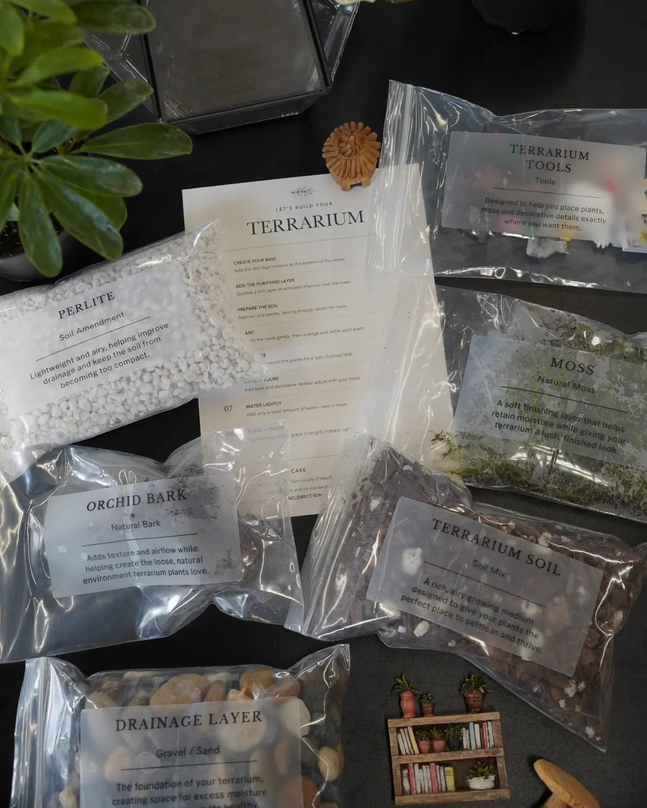

Welcome, Snip & Sprout Co.
What needs you is first. Each part of your website has its own page.
Needs you

Your website
Website visitors
Last 4 weeks
- Only with your password
- Sent only to Stray Wolf
- Your visitors never see it
Messages from your website
What people send with the form on your website. Each one is also emailed to you.
Your shop
What your website sells. Every Buy button opens your Square checkout.
Your website info
What your website says today.
-
Contact infoHow people reach you.
On your site now
- snipandsproutco@gmail.com
- Address
- 413 E. Emma Ave., Springdale, AR 72764
-
Shop hoursWhen you're open.
On your site now
- Mon – Tue
- 10 AM – 3 PM
- Wed – Fri
- 9 AM – 6 PM
- Sat – Sun
- 9 AM – 2 PM
-
Your social pagesJust the ones you have.
On your site now
- Instagraminstagram.com/snipandsprout.co
- Etsyetsy.com/shop/SnipAndSproutCo
- Facebookfacebook.com/yourpageExample
- Googlemaps.app.goo.gl/yourplaceExample
-
Your logoStray Wolf puts it on your website.
On your site nowDownload

-
PhotosYour shop, your workshops, what people made.
On your site now




 See allyour photos
See allyour photos
Your requests
What you've asked Stray Wolf for, and where each one stands.